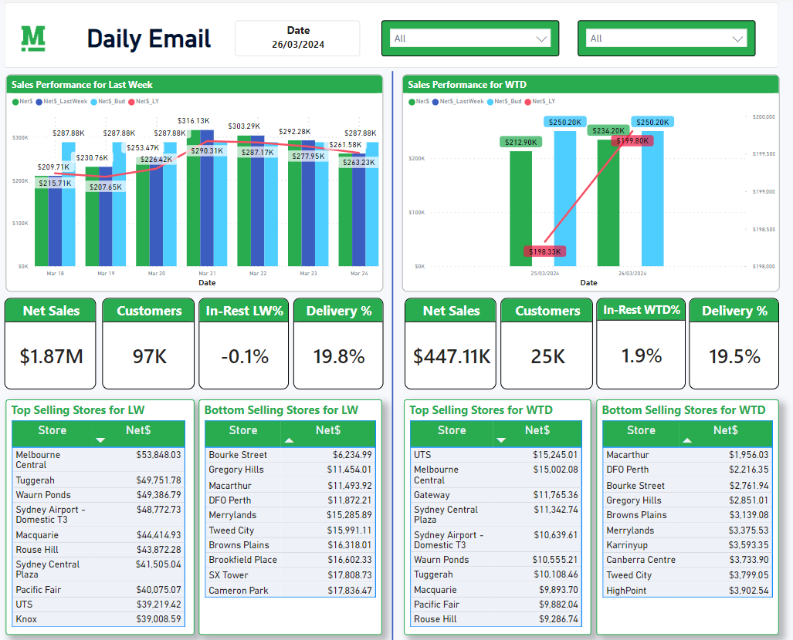
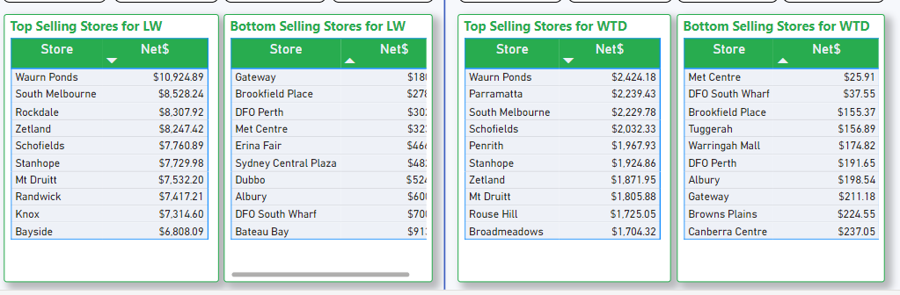
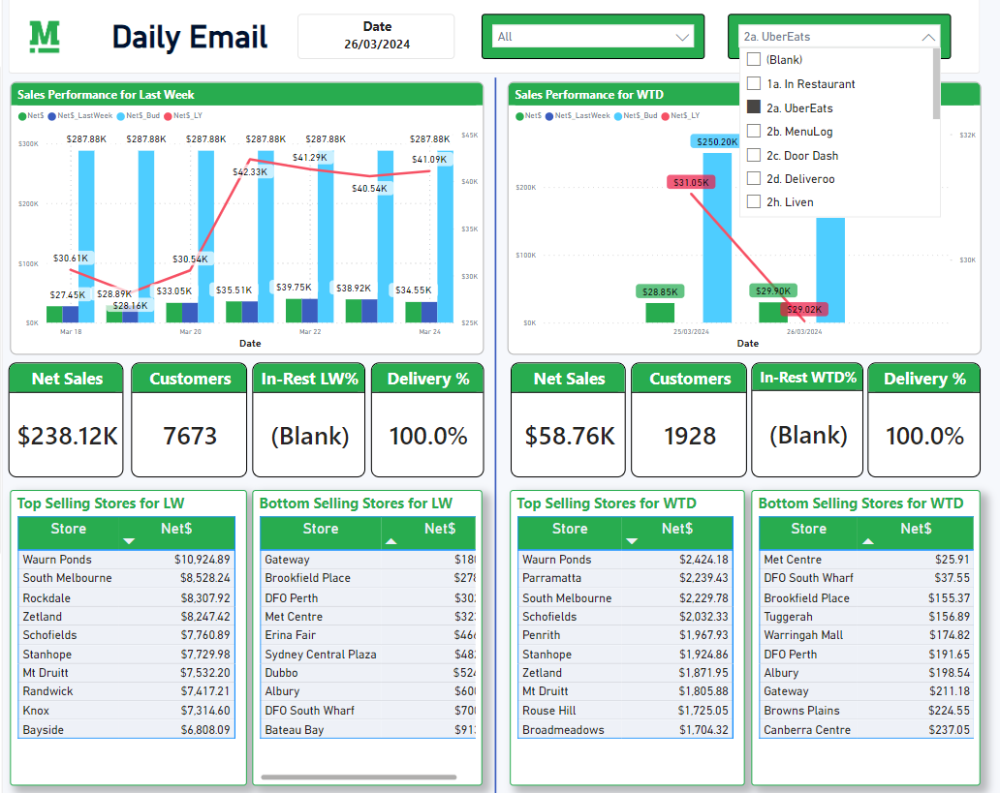

Store Performance Report
This Powerbi report showcase the last week and week to date store performance across all location in Madmex Australia Both National and WA. Key data that you will see are Net$, Net$ Last week, Net$ Budget, and Net$ Last year. You will also see last week and WTD Net Sales, number of customers, last week percentage in restaurant and delivery
You can also see the top stores and bottom stores per sales. This is important to know which store is performing well and to know which store needs assistance.
Filters included on this report are store location and whether if its in-restaurant or delivery providers. Scheduled refresh is every day 6:00AM and email scheduled is every Monday 9:00AM. Dataset is connected to shift8 datawarehouse.